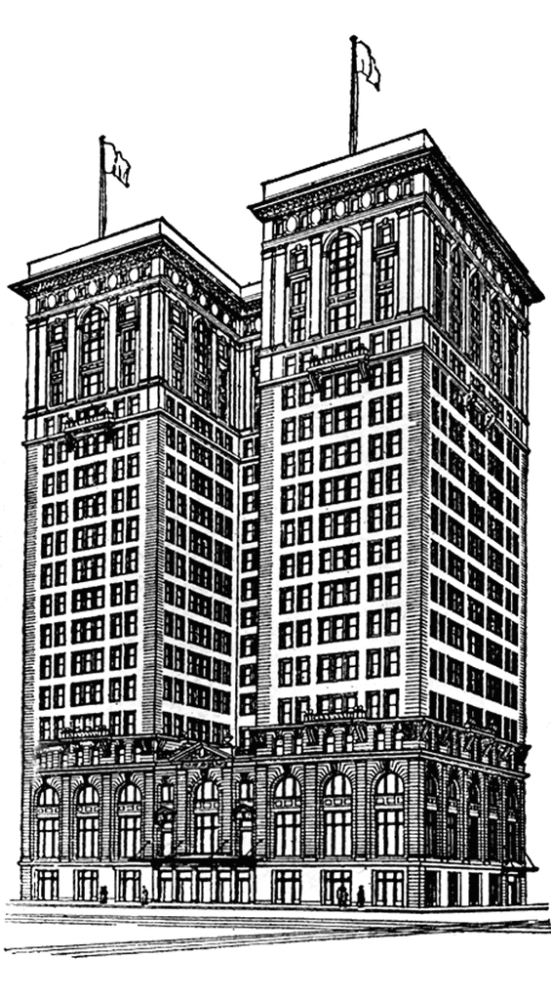
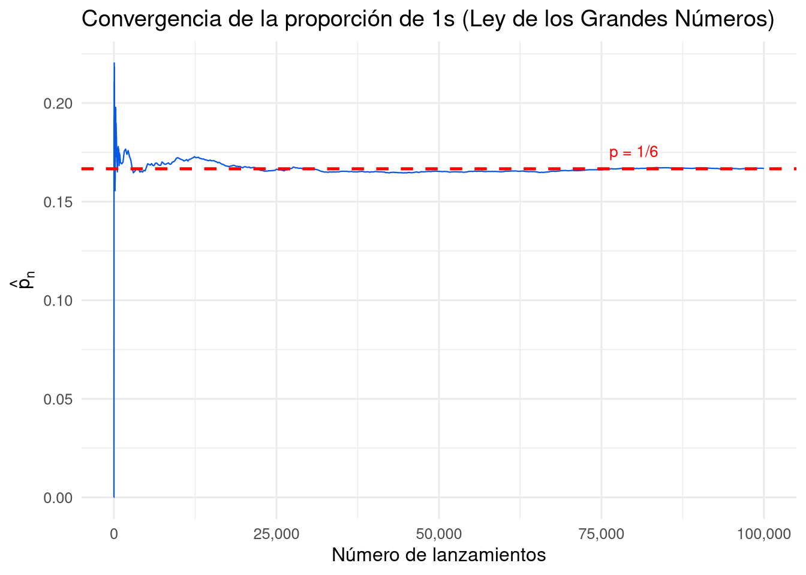
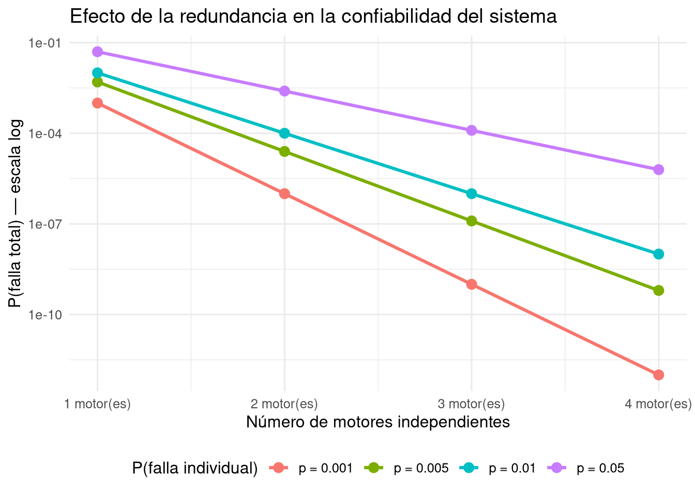
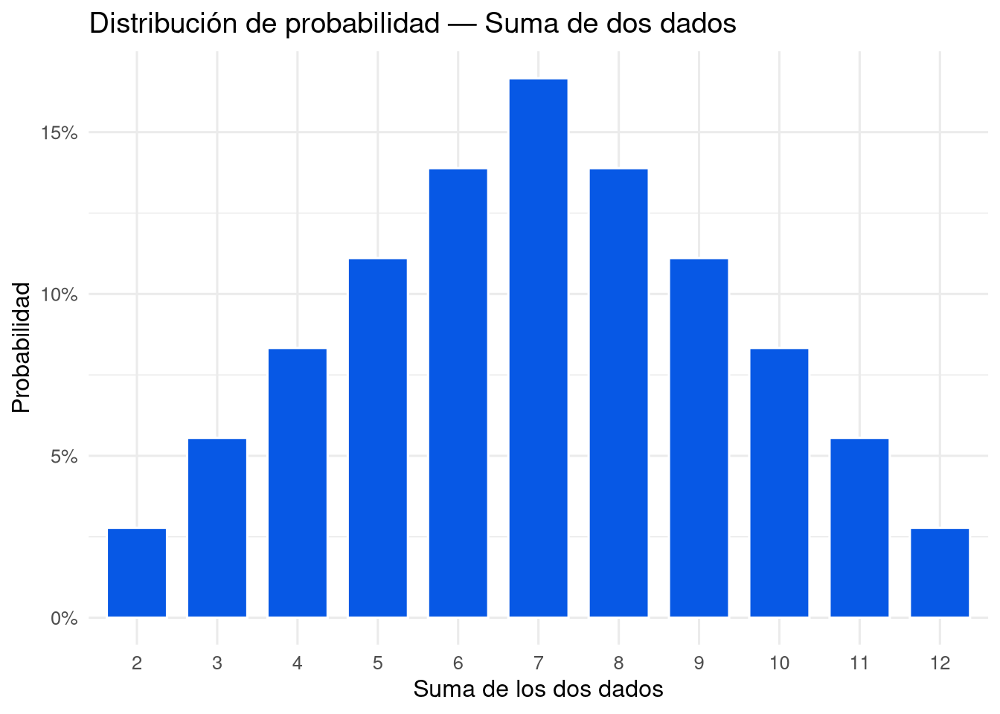
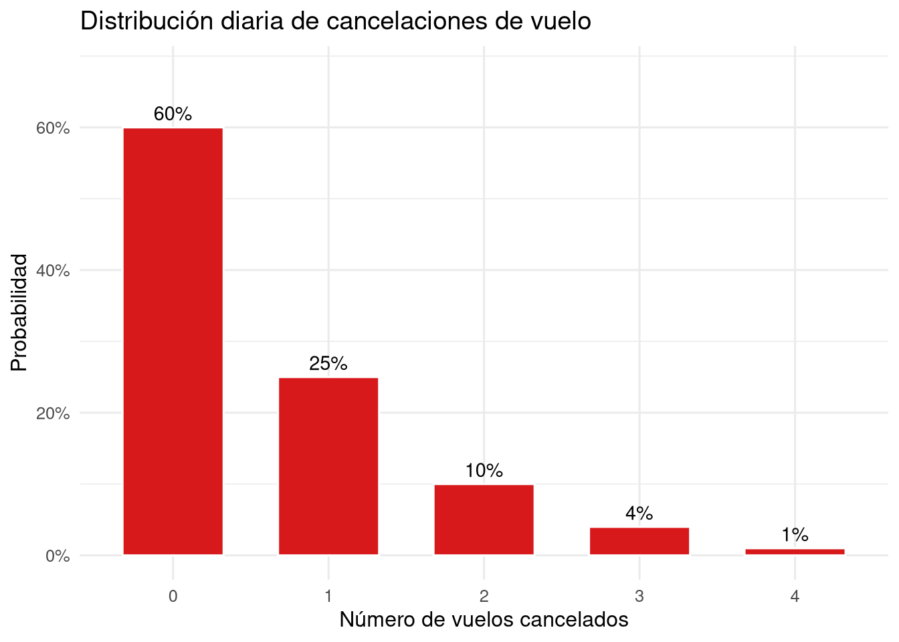
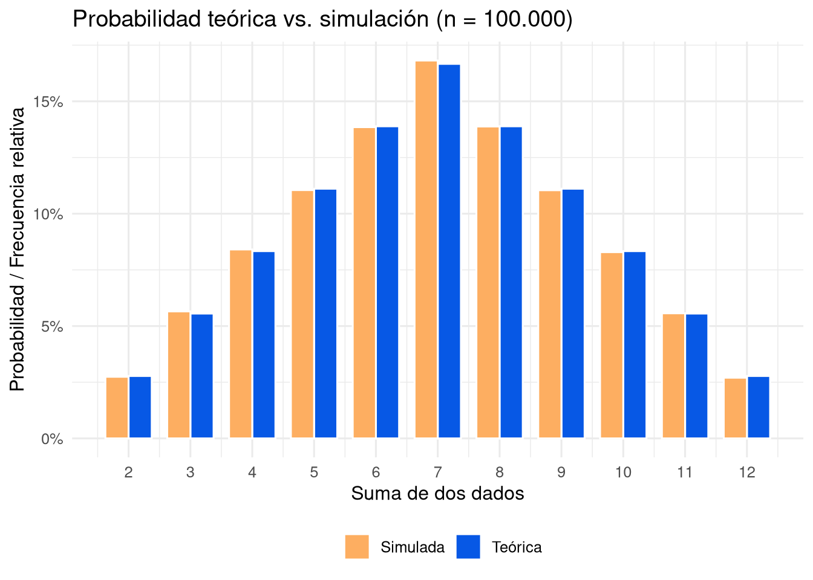

Fundamentos de probabilidad: espacios muestrales, reglas de la probabilidad, eventos disjuntos, independencia y distribuciones de probabilidad. Ejemplos con dados, cartas y aplicaciones aeronáuticas.
Esta lección introduce la probabilidad como base de la inferencia estadística. Se estudian conceptos como espacio muestral, probabilidad de un evento, regla de la adición, complemento, independencia y distribuciones de probabilidad. Mediante ejemplos con dados, cartas y situaciones propias de la aviación (confiabilidad de motores, cancelaciones de vuelo) se construye una comprensión operativa de la probabilidad, apoyada en simulaciones con R.

Figura 1: Vuelo 1549 de US Airways sobre el río Hudson. La toma de decisiones en aviación se apoya en evaluaciones de riesgo y probabilidad — una aplicación directa del pensamiento probabilístico.
1 Objetivos de la lección
Al finalizar esta lección, serás capaz de:
Definir probabilidad en su interpretación frecuentista y reconocer la Ley de los Grandes Números.
Describir un espacio muestral y calcular probabilidades de eventos sencillos.
Aplicar la regla de la adición para eventos disjuntos y la regla general de la adición.
Calcular la probabilidad del complemento de un evento y reconocer cuándo conviene usarlo.
Identificar eventos independientes y aplicar la regla del producto.
Construir e interpretar distribuciones de probabilidad para variables aleatorias discretas.
Usar R para simular experimentos aleatorios y verificar empíricamente las reglas teóricas.
2 ¿Qué es la probabilidad?
La probabilidad es la herramienta matemática que usamos para cuantificar la incertidumbre. En estadística, actúa como puente entre la muestra y la población: nos permite medir qué tan verosímil es una afirmación a partir de los datos observados. Antes de estimar parámetros, contrastar hipótesis o construir intervalos de confianza, necesitamos un lenguaje preciso para hablar de lo incierto — ese es, exactamente, el lenguaje de la probabilidad.
NotaDefinición: Probabilidad
La probabilidad de un resultado es la proporción de veces que dicho resultado ocurriría si observáramos el proceso aleatorio un número infinito de veces. Es siempre un número en el intervalo \([0, 1]\): un evento imposible tiene probabilidad \(0\) y un evento seguro tiene probabilidad \(1\).
Por ejemplo, si lanzamos un dado equilibrado, la probabilidad de obtener un 1 es \(P(1) = 1/6 \approx 0{,}167\). Esto significa que, en una larga serie de lanzamientos, aproximadamente el 16,7 % arrojaría un 1.
2.1 La Ley de los Grandes Números
La probabilidad se manifiesta en la práctica mediante la Ley de los Grandes Números: a medida que aumentamos el número de repeticiones, la proporción observada \(\hat{p}_n\) de un resultado se acerca cada vez más a su probabilidad teórica \(p\).
NotaLey de los Grandes Números
A medida que se recopilan más observaciones, la proporción \(\hat{p}_n\) de ocurrencias con un resultado particular converge a la probabilidad \(p\) de ese resultado.
La siguiente simulación ilustra esta convergencia para el lanzamiento de un dado justo, donde \(p = 1/6\).
set.seed(123)n <-100000# Simulamos n lanzamientos de un dado justolanzamientos <-sample(1:6, n, replace =TRUE)# Proporción acumulada de 1s tras cada lanzamientoprop_acum <-cumsum(lanzamientos ==1) /seq_along(lanzamientos)# Seleccionamos puntos para graficar más ágilmenteidx <-unique(c(1:1000, seq(1000, n, by =200)))ggplot(data.frame(tiro = idx, prop = prop_acum[idx]),aes(x = tiro, y = prop)) +geom_line(color ="#0758E5", linewidth =0.4) +geom_hline(yintercept =1/6, linetype ="dashed",color ="red", linewidth =0.9) +scale_x_continuous(labels = comma) +annotate("text", x =80000, y =1/6+0.009,label ="p = 1/6", color ="red", size =3.5) +labs(x ="Número de lanzamientos",y =expression(hat(p)[n]),title ="Convergencia de la proporción de 1s (Ley de los Grandes Números)") +theme_minimal(base_size =12)

Figura 2: Proporción acumulada de 1s al lanzar un dado 100.000 veces. La línea roja punteada indica la probabilidad teórica p = 1/6 ≈ 0,167. Las oscilaciones iniciales se amortiguan progresivamente.
Nota que para pocas observaciones la proporción oscila considerablemente. Esas oscilaciones no son una violación de la ley: son exactamente lo que cabría esperar. La Ley de los Grandes Números garantiza que las desviaciones se hacen progresivamente más pequeñas, pero no que desaparezcan en ningún lanzamiento concreto.
3 Espacio muestral y eventos
El espacio muestral\(S\) es el conjunto de todos los resultados posibles de un experimento aleatorio. Un evento es cualquier subconjunto del espacio muestral.
Al lanzar un dado, \(S = \{1, 2, 3, 4, 5, 6\}\), y el evento “obtener número par” es \(A = \{2, 4, 6\}\). Al lanzar una moneda, \(S = \{\text{Cara}, \text{Sello}\}\). En contexto aeronáutico, al observar si un vuelo sale a tiempo, \(S = \{\text{A tiempo}, \text{Demorado}\}\).
Escribimos \(P(A)\) para denotar la probabilidad del evento \(A\). Cuando el espacio muestral tiene \(n\) resultados igualmente probables y el evento \(A\) contiene \(k\) de ellos, entonces \(P(A) = k/n\).
4 Eventos disjuntos y regla de la adición
4.1 Eventos mutuamente excluyentes
Dos eventos son disjuntos (o mutuamente excluyentes) si no pueden ocurrir simultáneamente. Al lanzar un dado, “sale 1” y “sale 2” son disjuntos porque en un mismo lanzamiento sólo puede ocurrir uno. En cambio, “sale 1” y “sale número impar” no son disjuntos, pues ambos ocurren cuando el resultado es 1.
ImportanteRegla de la adición para eventos disjuntos
Si \(A_1\) y \(A_2\) son eventos disjuntos, entonces
\[P(A_1 \text{ o } A_2) = P(A_1) + P(A_2).\]
Más en general, para \(k\) eventos mutuamente excluyentes \(A_1, \ldots, A_k\),
\[P(A_1 \text{ o } A_2 \text{ o } \cdots \text{ o } A_k) = \sum_{i=1}^{k} P(A_i).\]
Ejemplo aeronáutico. Un aeropuerto registra las causas de retraso. La probabilidad de que un vuelo se retrase por condiciones meteorológicas es \(0{,}12\) y por falla mecánica es \(0{,}05\). Si ambas causas son mutuamente excluyentes como causa principal del retraso, entonces
\[P(\text{meteorología o falla}) = 0{,}12 + 0{,}05 = 0{,}17.\]
4.2 Regla general de la adición
Cuando los eventos no son disjuntos, la suma simple de probabilidades cuenta dos veces los resultados en la intersección. La corrección da lugar a la regla general.
ImportanteRegla general de la adición
Para cualesquiera dos eventos \(A\) y \(B\), disjuntos o no,
\[P(A \text{ o } B) = P(A) + P(B) - P(A \text{ y } B),\]
donde \(P(A \text{ y } B)\) es la probabilidad de que ocurran ambos simultáneamente.
Tip«o» es inclusivo en estadística
Cuando escribimos «\(A\) o \(B\)», queremos decir «\(A\), \(B\), o ambos», salvo indicación en contrario.
Ejemplo con cartas. En un mazo estándar de 52 cartas, sea \(A\) = “la carta es un diamante” y \(B\) = “la carta es una figura” (J, Q, K). Tenemos \(P(A) = 13/52\), \(P(B) = 12/52\) y \(P(A \text{ y } B) = 3/52\) (las cartas J diamante, Q diamante, K diamante pertenecen a ambos eventos). Entonces
\[P(A \text{ o } B) = \frac{13}{52} + \frac{12}{52} - \frac{3}{52} = \frac{22}{52} = \frac{11}{26} \approx 0{,}423.\]
Ejemplo aeronáutico. En cierto aeropuerto, \(P(\text{cancelación por mal tiempo}) = 0{,}02\), \(P(\text{cancelación por problemas técnicos}) = 0{,}01\), y \(P(\text{ambas causas}) = 0{,}002\). Como no son disjuntos, aplicamos la regla general:
El complemento del evento \(A\), denotado \(A^c\), reúne todos los resultados del espacio muestral que no pertenecen a \(A\). Por construcción, \(A\) y \(A^c\) son disjuntos y juntos cubren todo \(S\), de modo que \(P(A \text{ o } A^c) = 1\).
Esta regla es especialmente valiosa cuando calcular \(P(A^c)\) es más sencillo que calcular \(P(A)\) directamente. En problemas complejos, los eventos del tipo “al menos uno” tienen como complemento natural “ninguno”, y este suele ser mucho más fácil de calcular.
Ejemplo. Si la probabilidad de que un piloto apruebe un chequeo médico es \(0{,}96\), la probabilidad de que no lo apruebe es \(1 - 0{,}96 = 0{,}04\).
Ejemplo con dados. Al lanzar dos dados, la probabilidad de que la suma sea menor que 12 resulta fácil de calcular por complemento: el único resultado que produce suma exactamente 12 es (6, 6), con probabilidad \(1/36\). Por tanto,
Dos procesos son independientes si conocer el resultado de uno no aporta información alguna sobre el resultado del otro. El lanzamiento de dos dados es el ejemplo canónico: el resultado del primer dado en nada modifica las probabilidades del segundo.
ImportanteRegla de la multiplicación para procesos independientes
Si \(A\) y \(B\) son eventos de dos procesos distintos e independientes,
\[P(A \text{ y } B) = P(A) \times P(B).\]
Para \(k\) eventos independientes \(A_1, \ldots, A_k\),
\[P(A_1 \text{ y } \cdots \text{ y } A_k) = \prod_{i=1}^{k} P(A_i).\]
Dos eventos \(A\) y \(B\) son independientes si y sólo si \(P(A \text{ y } B) = P(A) \times P(B)\). Esta igualdad puede usarse tanto para aplicar la regla como para verificar si la independencia se cumple en un conjunto de datos.
Verificación con cartas. En una baraja, ¿son independientes “la carta es corazón” y “la carta es un as”?
La igualdad se cumple, de modo que los eventos son independientes.
6.2 Aplicación aeronáutica: redundancia de sistemas
Un avión bimotor puede continuar volando si al menos uno de sus motores funciona. Supongamos que la probabilidad de falla de cada motor en un vuelo dado es \(p = 0{,}001\) y que las fallas son independientes entre sí. La probabilidad de que ambos fallen simultáneamente es
Este resultado ilustra el principio de redundancia: dos sistemas independientes con baja probabilidad de falla individual producen una probabilidad conjunta de falla extraordinariamente pequeña. La siguiente figura generaliza este efecto.
p_vals <-c(0.001, 0.005, 0.01, 0.05)k_vals <-1:4# P(todos fallen) = p^k, por la regla de multiplicación de independientesdf_red <-expand.grid(p = p_vals, k = k_vals) |>mutate(p_falla_total = p^k,etiqueta_p =paste0("p = ", p) )ggplot(df_red, aes(x = k, y = p_falla_total,color = etiqueta_p, group = etiqueta_p)) +geom_line(linewidth =1.1) +geom_point(size =3) +scale_y_log10(labels = scientific) +scale_x_continuous(breaks =1:4,labels =paste(1:4, "motor(es)")) +labs(x ="Número de motores independientes",y ="P(falla total) — escala log",color ="P(falla individual)",title ="Efecto de la redundancia en la confiabilidad del sistema") +theme_minimal(base_size =12) +theme(legend.position ="bottom")

Figura 3: Probabilidad de falla total del sistema en escala logarítmica, en función del número de motores independientes, para cuatro niveles de probabilidad individual de falla.
Cada motor adicional reduce la probabilidad de falla total en varios órdenes de magnitud. Este es el principio de diseño que hace que volar sea una de las actividades más seguras del mundo moderno.
Ejemplo adicional: independencia en una encuesta. En una encuesta a pilotos, el 10 % son mujeres, el 30 % vuela en aerolíneas de bajo costo, y el 3 % son mujeres que vuelan en bajo costo. ¿Son independientes “ser mujer” y “volar en bajo costo”?
\[P(\text{mujer}) \times P(\text{bajo costo}) = 0{,}10 \times 0{,}30 = 0{,}030 = P(\text{mujer y bajo costo}) \checkmark\]
La igualdad se verifica, de modo que ambos eventos son independientes en esta muestra.
7 Distribuciones de probabilidad
Una distribución de probabilidad es una tabla o función que lista todos los resultados disjuntos posibles de una variable aleatoria junto con sus probabilidades. Toda distribución debe satisfacer tres condiciones: los resultados son mutuamente excluyentes, cada probabilidad está en \([0,1]\), y la suma de todas las probabilidades es exactamente 1.
7.1 Ejemplo clásico: suma de dos dados
La tabla siguiente muestra la distribución completa de la suma de dos dados equilibrados.
Tabla 1: Distribución de probabilidad para la suma de dos dados. La suma de la columna Probabilidad es exactamente 1.
Suma
Casos favorables
Fracción
Probabilidad
2
1
1/36
0.0278
3
2
2/36
0.0556
4
3
3/36
0.0833
5
4
4/36
0.1111
6
5
5/36
0.1389
7
6
6/36
0.1667
8
5
5/36
0.1389
9
4
4/36
0.1111
10
3
3/36
0.0833
11
2
2/36
0.0556
12
1
1/36
0.0278
df_dados <-data.frame(suma =2:12,prob =c(1, 2, 3, 4, 5, 6, 5, 4, 3, 2, 1) /36)ggplot(df_dados, aes(x =as.factor(suma), y = prob)) +geom_col(fill ="#0758E5", color ="white", width =0.75) +scale_y_continuous(labels =percent_format(accuracy =1)) +labs(x ="Suma de los dos dados", y ="Probabilidad",title ="Distribución de probabilidad — Suma de dos dados") +theme_minimal(base_size =12)

Figura 4: Distribución de probabilidad de la suma de dos dados. La forma triangular simétrica refleja que hay más maneras de producir sumas intermedias que sumas extremas.
7.2 Aplicación aeronáutica: vuelos cancelados por día
Según datos históricos de una aerolínea regional, la distribución del número de vuelos cancelados en un día cualquiera es la siguiente. Puedes verificar que \(0{,}60 + 0{,}25 + 0{,}10 + 0{,}04 + 0{,}01 = 1{,}00\).
df_vuelos <-data.frame(x =0:4,p =c(0.60, 0.25, 0.10, 0.04, 0.01))ggplot(df_vuelos, aes(x =factor(x), y = p)) +geom_col(fill ="#D7191C", color ="white", width =0.65) +geom_text(aes(label =percent(p, accuracy =1)),vjust =-0.5, size =3.8) +scale_y_continuous(labels =percent_format(accuracy =1),limits =c(0, 0.68)) +labs(x ="Número de vuelos cancelados", y ="Probabilidad",title ="Distribución diaria de cancelaciones de vuelo") +theme_minimal(base_size =12)

Figura 5: Distribución de probabilidad para el número de vuelos cancelados por día. El 60 % de los días no se cancela ningún vuelo.
8 Simulación en R: teoría y práctica frente a frente
Una ventaja de R es que podemos simular procesos aleatorios y comparar los resultados empíricos con las predicciones teóricas. El siguiente código realiza 100.000 lanzamientos de dos dados y compara las frecuencias relativas observadas con las probabilidades de la distribución teórica.
set.seed(2026)n_sim <-100000# Simulamos dos dados y calculamos su sumadado1 <-sample(1:6, n_sim, replace =TRUE)dado2 <-sample(1:6, n_sim, replace =TRUE)suma_sim <- dado1 + dado2# Frecuencias relativas observadasfreq_obs <-as.data.frame(table(suma_sim) / n_sim)names(freq_obs) <-c("suma", "freq_obs")freq_obs$suma <-as.integer(as.character(freq_obs$suma))# Probabilidades teóricasdf_teo <-data.frame(suma =2:12,prob_teo =c(1, 2, 3, 4, 5, 6, 5, 4, 3, 2, 1) /36)# Fusionamos y pasamos a formato largo para ggplotdf_comp <-merge(df_teo, freq_obs, by ="suma") |>pivot_longer(cols =c("prob_teo", "freq_obs"),names_to ="tipo", values_to ="valor") |>mutate(tipo =ifelse(tipo =="prob_teo", "Teórica", "Simulada"))ggplot(df_comp, aes(x = suma, y = valor, fill = tipo)) +geom_col(position ="dodge", width =0.75, color ="white") +scale_x_continuous(breaks =2:12) +scale_y_continuous(labels =percent_format(accuracy =1)) +scale_fill_manual(values =c("Teórica"="#0758E5","Simulada"="#FDAE61")) +labs(x ="Suma de dos dados",y ="Probabilidad / Frecuencia relativa",fill ="",title ="Probabilidad teórica vs. simulación (n = 100.000)") +theme_minimal(base_size =12) +theme(legend.position ="bottom")

Figura 6: Comparación entre probabilidades teóricas (azul) y frecuencias simuladas (naranja) para la suma de dos dados con n = 100.000 lanzamientos. La Ley de los Grandes Números garantiza el estrecho acuerdo entre ambas.
El acuerdo entre ambas distribuciones es muy estrecho, y cualquier diferencia residual se debe al azar de la simulación. Si repitieras con \(n = 10^6\), las diferencias serían aún menores.
9 Síntesis de conceptos clave
La siguiente tabla resume las reglas fundamentales desarrolladas a lo largo de la lección.
Concepto
Expresión matemática
Condición de aplicación
Espacio muestral completo
\(P(S) = 1\)
Siempre
Evento imposible
\(P(\emptyset) = 0\)
Siempre
Complemento
\(P(A^c) = 1 - P(A)\)
Siempre
Adición (disjuntos)
\(P(A \cup B) = P(A) + P(B)\)
\(A \cap B = \emptyset\)
Adición (general)
\(P(A \cup B) = P(A) + P(B) - P(A \cap B)\)
Siempre
Multiplicación
\(P(A \cap B) = P(A) \cdot P(B)\)
\(A\) y \(B\) independientes
10 Cuestionario grupal
Responde las siguientes preguntas mostrando el razonamiento y los cálculos necesarios. Cuando corresponda, indica qué regla estás aplicando y por qué es válida en ese contexto.
Pregunta 1 — Dados y eventos. Al lanzar un dado equilibrado de seis caras: (a) ¿Cuál es la probabilidad de obtener un número mayor que 4? (b) ¿Cuál es la probabilidad de obtener un número impar o un 6? (c) ¿Son los eventos “obtener un número par” y “obtener un número mayor que 3” disjuntos? Justifica con el espacio muestral.
Pregunta 2 — Cartas. De un mazo estándar de 52 cartas se extrae una carta al azar. Calcula: (a) la probabilidad de que sea un as; (b) la probabilidad de que sea un as o una carta de tréboles; (c) la probabilidad de que no sea un as.
Pregunta 3 — Vuelos cancelados. En cierto aeropuerto, \(P(\text{cancelación por mal tiempo}) = 0{,}02\), \(P(\text{cancelación por problemas técnicos}) = 0{,}01\), y \(P(\text{ambas causas}) = 0{,}002\). (a) ¿Son disjuntos estos eventos? Explica. (b) Calcula la probabilidad de cancelación por una u otra causa. (c) Si la probabilidad de que un vuelo salga a tiempo es \(0{,}85\), ¿cuál es la probabilidad de que se retrase o cancele?
Pregunta 4 — Motores de avión. Un avión de cuatro motores puede volar si al menos dos funcionan. Cada motor tiene probabilidad de falla independiente \(p = 0{,}002\). (a) Calcula la probabilidad de que los cuatro motores funcionen correctamente. (b) Calcula la probabilidad de que exactamente un motor falle. (c) ¿Es el sistema de cuatro motores más seguro que un bimotor con los mismos motores? Justifica cuantitativamente.
Pregunta 5 — Simulación con R. Modifica el código de la lección para estimar la probabilidad de obtener un 6 al lanzar un dado. (a) ¿Cuál es la probabilidad teórica? (b) Realiza la simulación con \(n = 1{.}000\) y \(n = 100{.}000\) lanzamientos. ¿Qué diferencias observas en la precisión? Relaciona tu respuesta con la Ley de los Grandes Números.
Pregunta 6 — Independencia. En una encuesta a pilotos, el 10 % son mujeres, el 30 % vuela en aerolíneas de bajo costo, y el 3 % son mujeres que vuelan en bajo costo. ¿Son los eventos “ser mujer” y “volar en bajo costo” independientes? Muestra los cálculos y expresa la conclusión en palabras.
¡Sigue practicando! La probabilidad es el lenguaje de la incertidumbre, y dominarlo te permitirá entender, construir y cuestionar con rigor cualquier afirmación basada en datos. Cualquier duda, consulta con el profesor.
Prof. Hans Sigrist — Colegio Portaliano, San Felipe